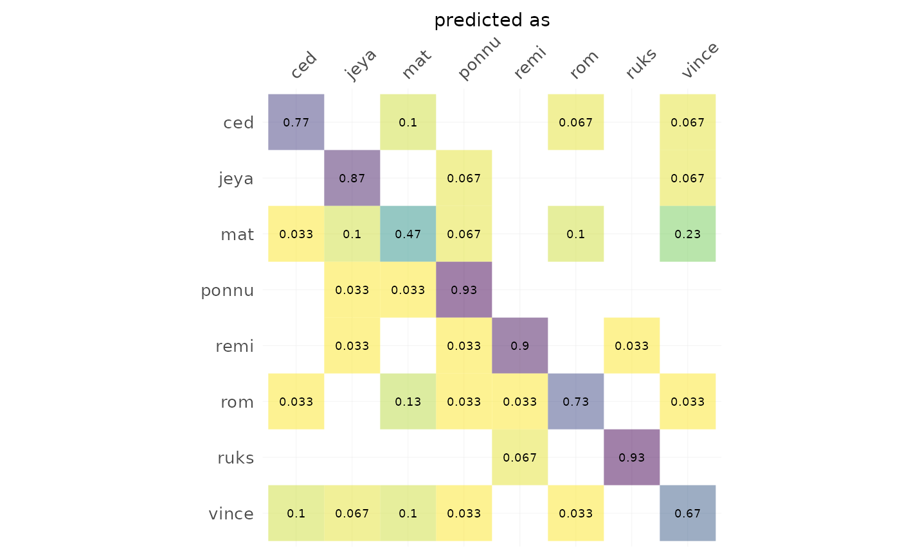
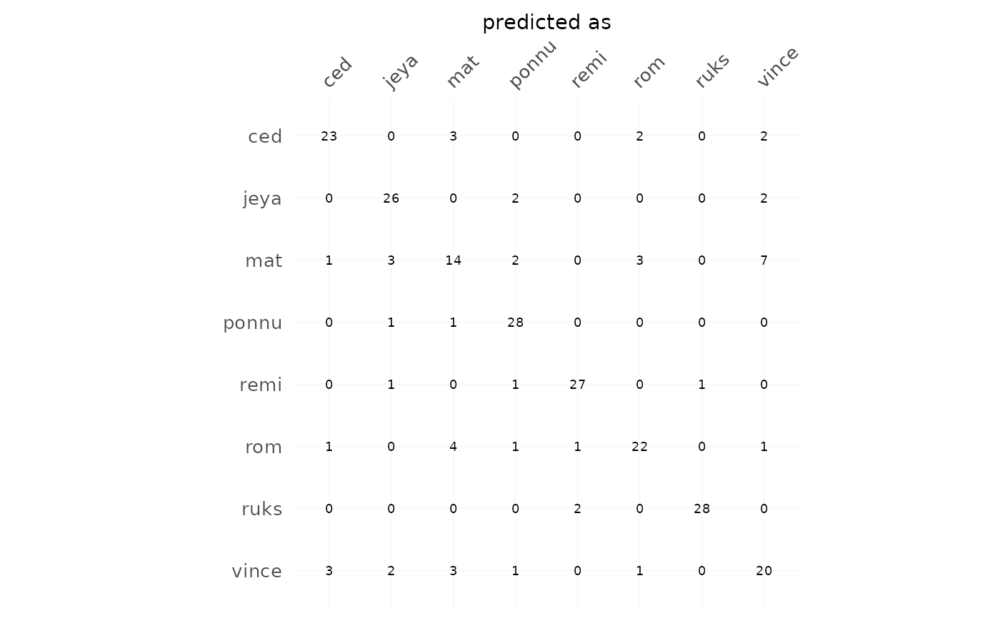
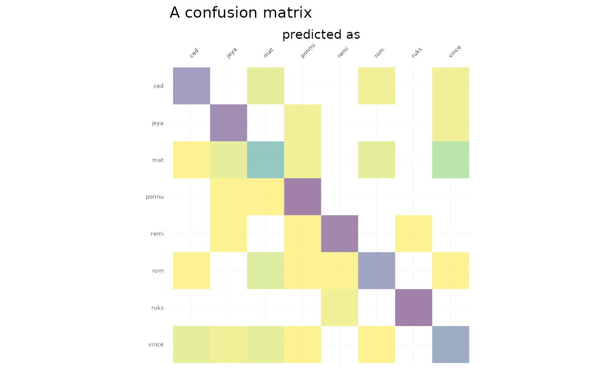
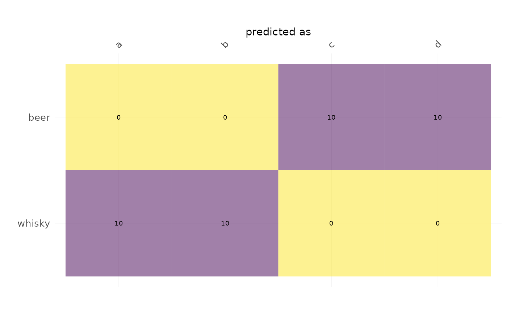
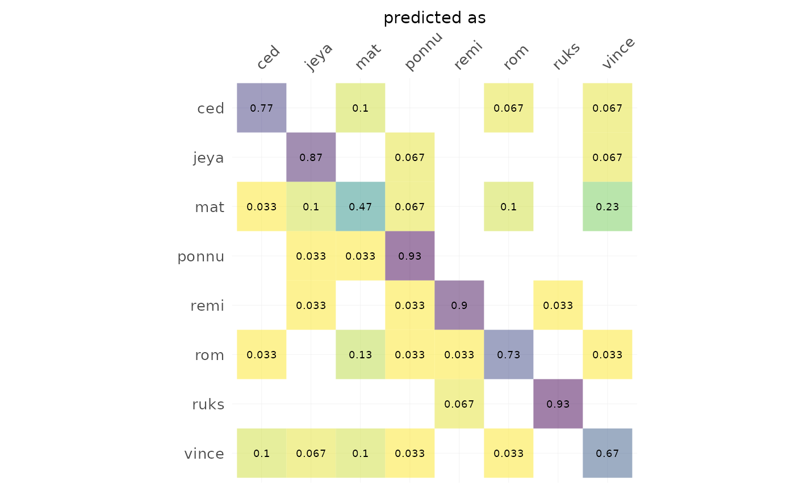
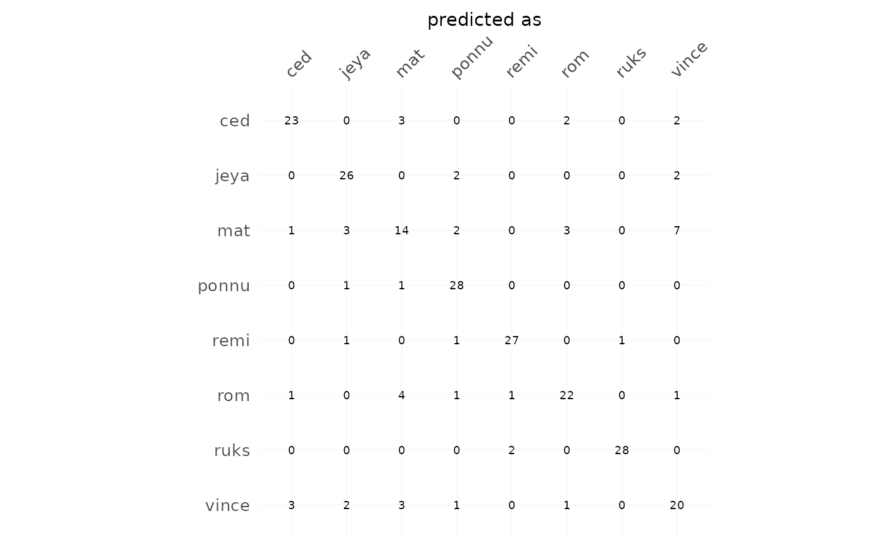
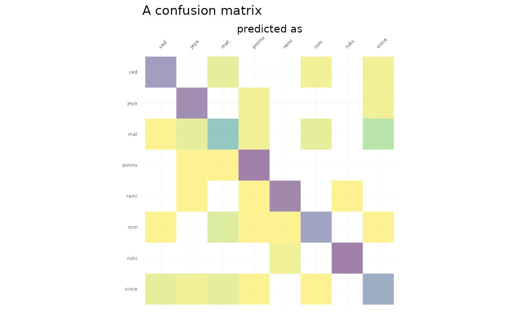
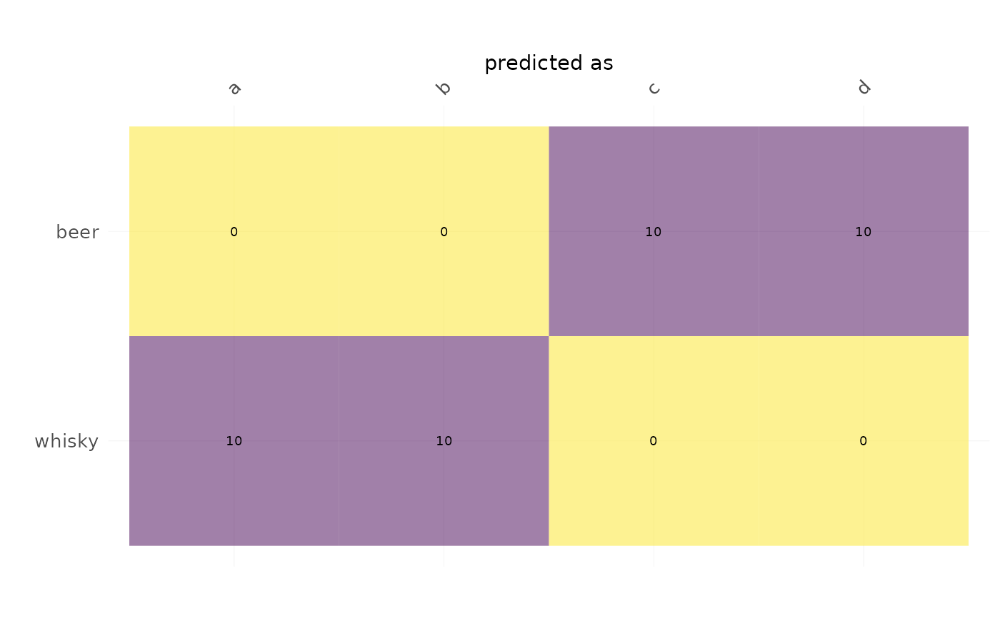

Either with frequencies (or percentages) plus marginal sums,
and values as heatmaps. Used in Momocs for plotting cross-validation tables
but may be used for any table (likely with freq=FALSE).
Usage
plot_CV(
x,
freq = FALSE,
rm0 = FALSE,
pc = FALSE,
fill = TRUE,
labels = TRUE,
axis.size = 10,
axis.x.angle = 45,
cell.size = 2.5,
signif = 2,
...
)
# S3 method for default
plot_CV(
x,
freq = FALSE,
rm0 = FALSE,
pc = FALSE,
fill = TRUE,
labels = TRUE,
axis.size = 10,
axis.x.angle = 45,
cell.size = 2.5,
signif = 2,
...
)
# S3 method for LDA
plot_CV(
x,
freq = TRUE,
rm0 = TRUE,
pc = TRUE,
fill = TRUE,
labels = TRUE,
axis.size = 10,
axis.x.angle = 45,
cell.size = 2.5,
signif = 2,
...
)Arguments
- x
a (cross-validation table) or an LDA object
- freq
logical whether to display frequencies (within an actual class) or counts
- rm0
logical whether to remove zeros
- pc
logical whether to multiply proportion by 100, ie display percentages
- fill
logical whether to fill cell according to count/freq
- labels
logical whether to add text labels on cells
- axis.size
numeric to adjust axis labels
- axis.x.angle
numeric to rotate x-axis labels
- cell.size
numeric to adjust text labels on cells
- signif
numeric to round frequencies using signif
- ...
useless here
See also
LDA, plot.LDA, and (pretty much the same) plot_table.
Examples
h <- hearts %>%
fgProcrustes(0.01) %>% coo_slide(ldk=2) %T>% stack %>%
efourier(6, norm=FALSE) %>% LDA(~aut)
#> iteration: 1 gain: 30322
#> iteration: 2 gain: 1.2498
#> iteration: 3 gain: 0.34194
#> iteration: 4 gain: 0.0062954
 h %>% plot_CV()
#> Warning: The `<scale>` argument of `guides()` cannot be `FALSE`. Use "none" instead as
#> of ggplot2 3.3.4.
#> ℹ The deprecated feature was likely used in the Momocs package.
#> Please report the issue at <https://github.com/MomX/Momocs/issues>.

h %>% plot_CV(freq=FALSE, rm0=FALSE, fill=FALSE)

# you can customize the returned gg with some ggplot2 functions
h %>% plot_CV(labels=FALSE, fill=TRUE, axis.size=5) + ggplot2::ggtitle("A confusion matrix")

# or build your own using the prepared data_frame:
df <- h %>% plot_CV() %$% data
df
#> # A tibble: 34 × 4
#> actual predicted n actual2
#> <fct> <fct> <dbl> <fct>
#> 1 ced ced 0.77 ced
#> 2 ced mat 0.1 ced
#> 3 ced rom 0.067 ced
#> 4 ced vince 0.067 ced
#> 5 jeya jeya 0.87 jeya
#> 6 jeya ponnu 0.067 jeya
#> 7 jeya vince 0.067 jeya
#> 8 mat ced 0.033 mat
#> 9 mat jeya 0.1 mat
#> 10 mat mat 0.47 mat
#> # ℹ 24 more rows
# you can even use it as a cross-table plotter
bot$fac %>% table %>% plot_CV()

h %>% plot_CV()
#> Warning: The `<scale>` argument of `guides()` cannot be `FALSE`. Use "none" instead as
#> of ggplot2 3.3.4.
#> ℹ The deprecated feature was likely used in the Momocs package.
#> Please report the issue at <https://github.com/MomX/Momocs/issues>.

h %>% plot_CV(freq=FALSE, rm0=FALSE, fill=FALSE)

# you can customize the returned gg with some ggplot2 functions
h %>% plot_CV(labels=FALSE, fill=TRUE, axis.size=5) + ggplot2::ggtitle("A confusion matrix")

# or build your own using the prepared data_frame:
df <- h %>% plot_CV() %$% data
df
#> # A tibble: 34 × 4
#> actual predicted n actual2
#> <fct> <fct> <dbl> <fct>
#> 1 ced ced 0.77 ced
#> 2 ced mat 0.1 ced
#> 3 ced rom 0.067 ced
#> 4 ced vince 0.067 ced
#> 5 jeya jeya 0.87 jeya
#> 6 jeya ponnu 0.067 jeya
#> 7 jeya vince 0.067 jeya
#> 8 mat ced 0.033 mat
#> 9 mat jeya 0.1 mat
#> 10 mat mat 0.47 mat
#> # ℹ 24 more rows
# you can even use it as a cross-table plotter
bot$fac %>% table %>% plot_CV()
